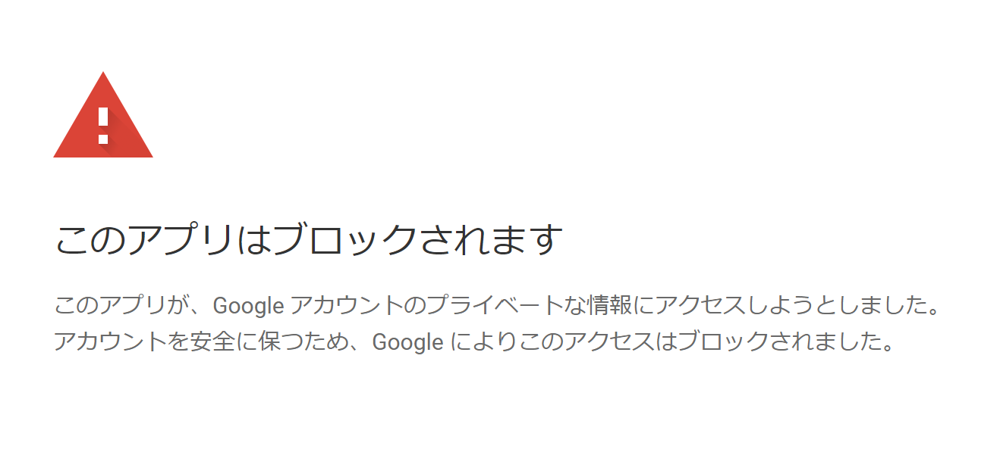
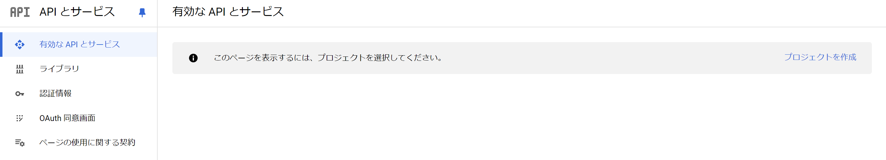
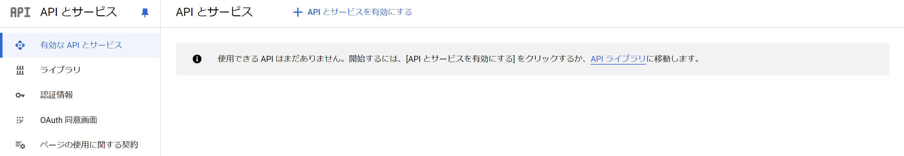
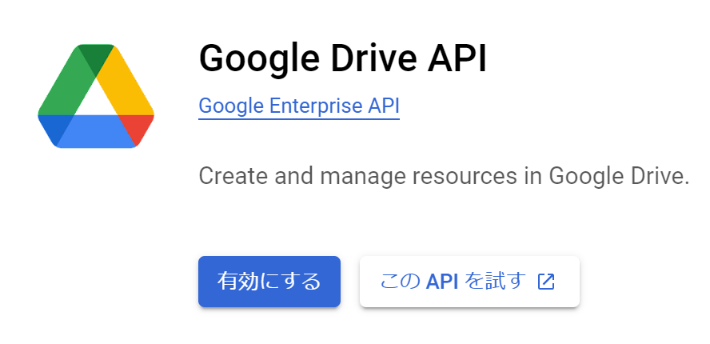
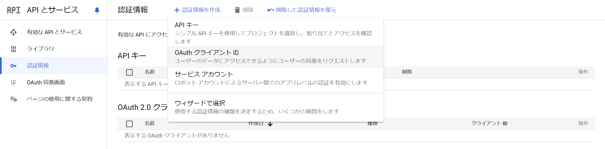

はじめに
以下の記事で紹介した開発コンテナですが、そのままやるとDVCの認証プロセスでエラーが出ます。

もしかすると今後対応されて何の問題もなく使えるようになるかもしれませんが、公式で推奨されているGoogle Cloud Projectを使えばこの問題に対処できるため、今回はその方法についてまとめていきます。
手順
まず前提として、以下のコマンドまでは問題なく行えます。
Terminal
dvc init && dvc remote add -d myremote gdrive://[Google DriveのフォルダID]ここからさらにdvc pushやdvc pullを行おうとするときに先ほどの画面が出てきます。
先述の通りGoogle Cloud Projectを使えば対処できますので、その設定を行います。
- 次のリンクからGoogle API Consoleにアクセス
- https://console.developers.google.com/
- なにやら同意を求められた場合は同意して進めて下さい。
- 使いたいGoogleアカウントでログインしていることを確認してください。
- 「プロジェクトを作成」を選択

- プロジェクト名を設定し、作成する
- こだわりがなければそのままで大丈夫です。
- 場所も無視して下さい。
- 「APIとサービスを有効にする」を選択
- 3の手順を踏むと「APIとサービス」の右に出てきます。

- Google Drive APIに入り、「有効にする」をクリック
- 少し下にあります。

- OAuth同意画面
- 画面左の「OAuth 同意画面」に入り、外部を選択して作成します。
- アプリ名は何でもいいです（例：DVC remote storage）。
- ユーザーサポートメールとデベロッパーの連絡先情報は自分のメールアドレスを入れ、その他は空欄でよいです。
- 保存して次へ、その次は無視して保存して次へ、最後にAdd usersで自分のメールアドレス（使っているGoogleアカウントのGmailアドレス）を入れて追加し、保存して次へを押して下さい。
- 認証情報を作成
- 画面左の「認証情報」に入り、上部に出てくる「認証情報を作成」から「OAuth クライアント ID」を選択して下さい。
- アプリケーションの種類は、「デスクトップ アプリ」、名前はそのままでよいので、作成して下さい。

ここまでが第1段階です。クライアントIDとクライアントシークレットが表示されていると思いますが、これは後から確認できるのでOKで閉じても大丈夫です。
一応どこかにコピーして控えておくと楽かもしれません。
@VSCode
VSCodeに戻ります。
Ctrl ＋ J1でターミナルを開き、次のコードを入力します。
dvc remote modify --local myremote gdrive_client_id 'client-id'dvc remote modify --local myremote gdrive_client_secret 'client-secret'ここで、client-idとclient-secretは先ほどのクライアントIDとクライアントシークレットに置き換えて、それぞれ実行してください（シングルクォーテーションは残してください）。
もし画面を閉じてどこかわからなくなった場合は、画面左の認証情報から「OAuth 2.0 クライアント ID」の名前部分をクリックすると見ることができるようになります。
さらに、追加で以下のコードを実行してください。
dvc remote modify --local myremote gdrive_user_credentials_file ~/.cache/myremote-credentials.jsonここでは特に変える部分はありません。
これで第2段階も終了しました。
dvc pushやdvc pullを実行すると、今度はブロックされずに進められるのではないでしょうか。途中「続行」を選ぶところがあれば、選んで進めてください。
認証が成功したら、VSCodeに戻るとプッシュやプルが進められているはずです。
一応上のコードで対処したつもりですが、dvc pushで異なるエラーが出た場合には、トラブルシューティングのページを参照してください。
おわりに
なにやら面倒な設定でしたが、今のところこれが（多分）唯一の解決策っぽいです。
そもそもDVCを使わずにデータもGitHubで実行すればという話でもあるのですが、データサイズの制約もありますので、自分のプロジェクトに合わせて使ってもらえればと思います。
Google Cloud Projectは普段あまり使うことがないと思うので、お役に立てれば幸いです。
うまくいかないことがあればコメントください。
注
Macなら
⌘＋J↩︎